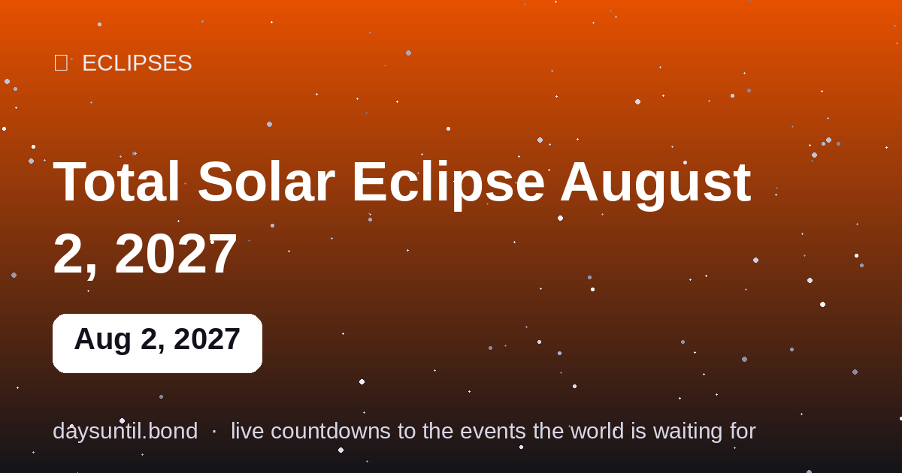

How Many Days Until Total Solar Eclipse August 2, 2027?
Total Solar Eclipse August 2, 2027 falls on Monday, August 2, 2027.
The live counter above updates every second in your local time zone. The date and weekday are shown in the event details.

Quick facts
| Date | Monday, August 2, 2027 |
|---|---|
| Type | Total eclipse |
| Safety | Solar: certified glasses only · Lunar: safe to watch |
About Total Solar Eclipse August 2, 2027
The eclipse of the century: up to 6 minutes 23 seconds of totality — the longest over land until 2114 — crossing southern Spain, Morocco, Algeria, TUNISIA, Libya, Egypt (Luxor gets 6+ minutes) and Saudi Arabia. If you've ever wanted to chase a total eclipse, this is the one to chase.
Eclipse timing depends on your location — the counter above runs to the calendar date worldwide. Never look at the Sun without certified eclipse glasses; the Moon's red glow during a total lunar eclipse is completely safe to watch.
The total solar eclipse of August 2, 2027
A total solar eclipse is due on August 2, 2027. During totality, the Moon will cover the Sun's bright photosphere for observers inside a narrow path across Earth's surface. Outside that path, observers may see a partial eclipse, with the amount of the Sun covered depending on location.
The countdown above targets the event date. Eclipse circumstances are location-specific: the start, maximum and end times differ from one city to another, and the duration of totality is greatest only along the central part of the path. Use an authoritative local circumstances map before making travel plans.
Where the 2027 totality path travels
The path of totality crosses parts of southern Europe, North Africa and the Middle East, including areas of southern Spain and North Africa before continuing eastward. The exact path is a narrow corridor, so being in the same country does not guarantee that a location will experience totality.
A city just outside the path will see a partial eclipse rather than totality. Before travelling, check the precise centreline and local contact times using NASA's eclipse resources or another authoritative eclipse calculator. Do not rely on a country-level description to decide whether a particular town is inside the path.
How to watch safely
Never look directly at the uneclipsed or partially eclipsed Sun without proper solar viewing protection. Ordinary sunglasses, smoked glass, photographic film and improvised filters are not safe. Use eclipse glasses that meet the relevant international safety standard, or an indirect projection method such as a pinhole projector.
The only brief exception is during the completely total phase, and only for observers who are actually inside the path of totality: direct viewing is safe only while the bright solar surface is fully covered. Put certified eye protection back on immediately when any part of the bright Sun reappears. If you are unsure whether totality has begun or ended, keep the glasses on.
What makes a total eclipse different from an annular eclipse
In a total solar eclipse, the Moon appears large enough to cover the Sun completely for a short period along the path of totality. The solar corona becomes visible around the dark lunar disc, and the landscape can briefly dim as if at twilight.
In an annular eclipse, the Moon appears too small to cover the entire solar disc, leaving a bright ring around it. Annular eclipses are never safe to view without a proper solar filter, including at maximum. The 2027 event is a total eclipse along its central path, not an annular one.
Planning a trip to the eclipse
Start with the exact path map, then compare cloud climatology, transport, accommodation and access restrictions for the locations you are considering. A location inside the path with a poor weather outlook may be less attractive than another accessible site with a clearer historical climate, although weather on eclipse day can never be guaranteed.
Plan to arrive early, protect your eyes, and have a backup location if road access and local rules allow it. The countdown is a reminder of the date, not a substitute for a detailed local timetable. NASA's eclipse pages provide maps and circumstances that can help with planning.
Your Total Solar Eclipse August 2, 2027 countdown milestones
It is easier to plan against fixed points than against a number that moves. These are the dates on which the countdown to Total Solar Eclipse August 2, 2027 passes each marker between now and the day itself — the last one falls on Sunday 01 August, when there will be 1 day left.
| Milestone | Day | Date | Remaining |
|---|---|---|---|
| 200 days | Thursday | 14 January 2027 | 200 days to go |
| 100 days | Saturday | 24 April 2027 | 100 days to go |
| 50 days | Sunday | 13 June 2027 | 50 days to go |
| 30 days | Saturday | 03 July 2027 | 30 days to go |
| 14 days | Monday | 19 July 2027 | 14 days to go |
| 7 days | Monday | 26 July 2027 | 7 days to go |
| 3 days | Friday | 30 July 2027 | 3 days to go |
| 1 days | Sunday | 01 August 2027 | 1 day to go |
How the remaining time breaks down
249 days is the headline, but it is rarely the number that helps. 177 of those are weekdays and 72 fall on a weekend, which is the split that matters if you are planning around work. It is 35 weeks and 4 days, or roughly 8.2 months, or about 5,976 hours.
| Unit | Until Total Solar Eclipse August 2, 2027 |
|---|---|
| Days | 249 |
| Weeks | 35 weeks and 4 days |
| Months (approx) | 8.2 |
| Weekdays | 177 |
| Weekend days | 72 |
| Hours | 5,976 |
| Sleeps | 249 |
Working days are Monday to Friday and do not subtract public holidays, which vary by country and employer — the full month-by-month split is on our weekday page for Total Solar Eclipse August 2, 2027.